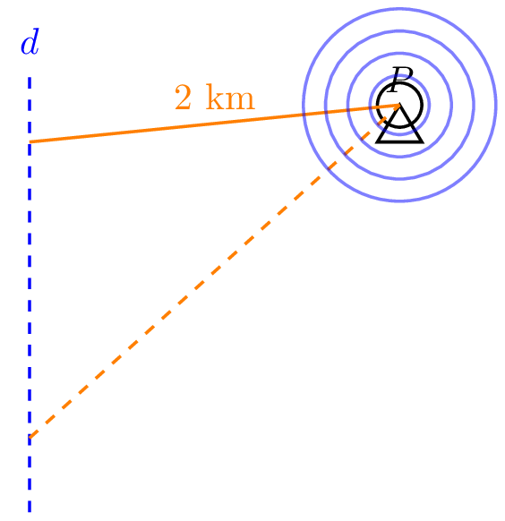

Họ tên sẽ được lưu lại trong trình duyệt để phục vụ thống kê kết quả.
👤 Học sinh: Chưa nhập
📝 Tiến độ: 0/0 câu
PHẦN I (Trắc nghiệm)
⏳ Bắt đầu (01:00)
Câu 1: Trong không gian ${Oxyz}$, cho đường thẳng ${\Delta}:\left\{ \begin{array}{l}x = 3-8t\\ y = 6+6t\\z = 9t\end{array} \right.$. Đường thẳng ${\Delta}$ nhận vectơ nào sau đây làm véctơ chỉ phương?
A
$\overrightarrow{u_3}=(-3;-6;0)$.
B
$\overrightarrow{u_2}=(-8;6;9)$.
C
$\overrightarrow{u_1}=(3;6;0)$.
D
$\overrightarrow{u_4}=(8;6;-9)$.
Câu ? / ?
📝 LỜI GIẢI CHI TIẾT:
Trong không gian ${Oxyz}$, cho đường thẳng ${\Delta}:\left\{ \begin{array}{l}x = 3-8t\\ y = 6+6t\\z = 9t\end{array} \right.$. Đường thẳng ${\Delta}$ nhận vectơ nào sau đây làm véctơ chỉ phương?
A. $\overrightarrow{u_3}=(-3;-6;0)$. B. $\overrightarrow{u_2}=(-8;6;9)$. C. $\overrightarrow{u_1}=(3;6;0)$. D. $\overrightarrow{u_4}=(8;6;-9)$.
Lời giải: Chọn B Đường thẳng ${\Delta}$ nhận vectơ $\vec{u}=(-8;6;9)$ làm véctơ chỉ phương.
PHẦN I (Trắc nghiệm)
⏳ Bắt đầu (01:00)
Câu 2: Trong không gian ${Oxyz}$, cho đường thẳng ${d}:\dfrac{x - 7}{-4}=\dfrac{y + 8}{-1}=\dfrac{z - 5}{-7}$. Đường thẳng ${d}$ nhận vectơ nào sau đây làm véctơ chỉ phương?
A
$\overrightarrow{u_1}=(-7;8;-5)$.
B
$\overrightarrow{u_4}=(-4;-1;-7)$.
C
$\overrightarrow{u_2}=(7;-8;5)$.
D
$\overrightarrow{u_3}=(4;-1;7)$.
Câu ? / ?
📝 LỜI GIẢI CHI TIẾT:
Trong không gian ${Oxyz}$, cho đường thẳng ${d}:\dfrac{x - 7}{-4}=\dfrac{y + 8}{-1}=\dfrac{z - 5}{-7}$. Đường thẳng ${d}$ nhận vectơ nào sau đây làm véctơ chỉ phương?
A. $\overrightarrow{u_1}=(-7;8;-5)$. B. $\overrightarrow{u_4}=(-4;-1;-7)$. C. $\overrightarrow{u_2}=(7;-8;5)$. D. $\overrightarrow{u_3}=(4;-1;7)$.
Lời giải: Chọn B Đường thẳng ${d}$ nhận vectơ $\vec{u}=(-4;-1;-7)$ làm véctơ chỉ phương.
PHẦN I (Trắc nghiệm)
⏳ Bắt đầu (01:00)
Câu 3: Trong không gian ${Oxyz}$, cho đường thẳng ${\Delta}:\left\{ \begin{array}{l}x = 7-2t\\ y = -4-8t\\z = -7-9t\end{array} \right.$. Đường thẳng ${\Delta}$ đi qua điểm nào trong các điểm sau?
A
$D=(-2;-8;-9)$.
B
$A=(6;-22;9)$.
C
$B=(-7;4;7)$.
D
$C=(3;-20;-25)$.
Câu ? / ?
📝 LỜI GIẢI CHI TIẾT:
Trong không gian ${Oxyz}$, cho đường thẳng ${\Delta}:\left\{ \begin{array}{l}x = 7-2t\\ y = -4-8t\\z = -7-9t\end{array} \right.$. Đường thẳng ${\Delta}$ đi qua điểm nào trong các điểm sau?
A. $D=(-2;-8;-9)$. B. $A=(6;-22;9)$. C. $B=(-7;4;7)$. D. $C=(3;-20;-25)$.
Lời giải: Chọn D Tồn tại $t=2 \Rightarrow x=3,y=-20,z=-25$ nên đường thẳng ${\Delta}$ đi qua $C=(3;-20;-25)$.
PHẦN I (Trắc nghiệm)
⏳ Bắt đầu (01:00)
Câu 4: Trong không gian ${Oxyz}$, cho đường thẳng ${\Delta}:\dfrac{x + 6}{-1}=\dfrac{y + 1}{1}=\dfrac{z - 8}{-1}$. Đường thẳng ${\Delta}$ đi qua điểm nào trong các điểm sau?
A
$C=(6;1;-8)$.
B
$B=(-3;-4;11)$.
C
$D=(-1;1;-1)$.
D
$A=(0;-9;1)$.
Câu ? / ?
📝 LỜI GIẢI CHI TIẾT:
Trong không gian ${Oxyz}$, cho đường thẳng ${\Delta}:\dfrac{x + 6}{-1}=\dfrac{y + 1}{1}=\dfrac{z - 8}{-1}$. Đường thẳng ${\Delta}$ đi qua điểm nào trong các điểm sau?
A. $C=(6;1;-8)$. B. $B=(-3;-4;11)$. C. $D=(-1;1;-1)$. D. $A=(0;-9;1)$.
Lời giải: Chọn B Đường thẳng ${\Delta}$ có phương trình tham số là $\left\{ \begin{array}{l}x = -6-t\\ y = -1+t\\z = 8-t\end{array} \right.$.
Tồn tại $t=-3 \Rightarrow x=-3,y=-4,z=11$ nên đường thẳng ${\Delta}$ đi qua $B=(-3;-4;11)$.
PHẦN I (Trắc nghiệm)
⏳ Bắt đầu (01:00)
Câu 5: Trong không gian ${Oxyz}$, đường thẳng ${d}$ đi qua điểm ${N(7;-8;-6)}$ và nhận vectơ $\vec{u}=(8;-3;-4)$ làm véctơ chỉ phương có phương trình là
Trong không gian ${Oxyz}$, đường thẳng ${d}$ đi qua điểm ${N(7;-8;-6)}$ và nhận vectơ $\vec{u}=(8;-3;-4)$ làm véctơ chỉ phương có phương trình là
A. $\dfrac{x - 7}{8}=\dfrac{y + 8}{-3}=\dfrac{z + 6}{-4}$. B. $\dfrac{x + 7}{8}=\dfrac{y - 8}{-3}=\dfrac{z - 6}{-4}$. C. $\dfrac{x - 8}{7}=\dfrac{y + 3}{-8}=\dfrac{z + 4}{-6}$. D. $\dfrac{x + 8}{7}=\dfrac{y - 3}{-8}=\dfrac{z - 4}{-6}$.
Lời giải: Chọn A Đường thẳng ${d}$ đi qua điểm ${N(7;-8;-6)}$ nhận vectơ $\vec{u}=(8;-3;-4)$ làm véctơ chỉ phương có phương có phương trình là: $\dfrac{x - 7}{8}=\dfrac{y + 8}{-3}=\dfrac{z + 6}{-4}$.
PHẦN I (Trắc nghiệm)
⏳ Bắt đầu (01:00)
Câu 6: Trong không gian ${Oxyz}$, đường thẳng ${\Delta}$ đi qua điểm ${I(3;-4;-4)}$ và nhận vectơ $\overrightarrow{HK}$ làm véctơ chỉ phương với $H(-6;5;5)$ và $K(0;6;13)$ có phương trình là
Trong không gian ${Oxyz}$, đường thẳng ${\Delta}$ đi qua điểm ${I(3;-4;-4)}$ và nhận vectơ $\overrightarrow{HK}$ làm véctơ chỉ phương với $H(-6;5;5)$ và $K(0;6;13)$ có phương trình là
A. $\dfrac{x - 3}{6}=\dfrac{y + 4}{1}=\dfrac{z + 4}{8}$. B. $\dfrac{x - 6}{3}=\dfrac{y - 1}{-4}=\dfrac{z - 8}{-4}$. C. $\dfrac{x + 6}{3}=\dfrac{y + 1}{-4}=\dfrac{z + 8}{-4}$. D. $\dfrac{x + 3}{6}=\dfrac{y - 4}{1}=\dfrac{z - 4}{8}$.
Lời giải: Chọn A Ta có: $\overrightarrow{HK}=(6;1;8)$.
Đường thẳng ${\Delta}$ đi qua điểm ${I(3;-4;-4)}$ nhận vectơ $\overrightarrow{HK}=(6;1;8)$ làm véctơ chỉ phương có phương trình là: $\dfrac{x - 3}{6}=\dfrac{y + 4}{1}=\dfrac{z + 4}{8}$.
PHẦN I (Trắc nghiệm)
⏳ Bắt đầu (01:00)
Câu 7: Trong không gian ${Oxyz}$, đường thẳng ${d}$ đi qua điểm ${M(5;-1;1)}$ và song song với đường thẳng $d_1:\dfrac{x - 4}{4}=\dfrac{y + 1}{-4}=\dfrac{z}{2}$ có phương trình là
Trong không gian ${Oxyz}$, đường thẳng ${d}$ đi qua điểm ${M(5;-1;1)}$ và song song với đường thẳng $d_1:\dfrac{x - 4}{4}=\dfrac{y + 1}{-4}=\dfrac{z}{2}$ có phương trình là
A. $\dfrac{x - 5}{-2}=\dfrac{y + 1}{2}=\dfrac{z - 1}{-1}$. B. $\dfrac{x + 5}{-2}=\dfrac{y - 1}{2}=\dfrac{z + 1}{-1}$. C. $\dfrac{x + 2}{5}=\dfrac{y - 2}{-1}=\dfrac{z + 1}{1}$. D. $\dfrac{x - 2}{5}=\dfrac{y + 2}{-1}=\dfrac{z - 1}{1}$.
Lời giải: Chọn A Đường thẳng ${d_1}$ có véctơ chỉ phương là $\overrightarrow{u_1}=(4;-4;2)$.
Đường thẳng ${d}$ song song với ${d_1}$ nên có một véctơ chỉ phương là vectơ $\vec{u}=(-2;2;-1)$.
Đường thẳng ${d}$ đi qua điểm ${M(5;-1;1)}$ nhận vectơ $\vec{u}=(-2;2;-1)$ làm véctơ chỉ phương có phương có phương trình là: $\dfrac{x - 5}{-2}=\dfrac{y + 1}{2}=\dfrac{z - 1}{-1}$.
PHẦN I (Trắc nghiệm)
⏳ Bắt đầu (01:00)
Câu 8: Trong không gian ${Oxyz}$, đường thẳng ${d}$ đi qua điểm ${C(6;8;-5)}$ và vuông góc với mặt phẳng $(\beta):- 2 x + 8 y - 7 z + 6=0$ có phương trình là
Trong không gian ${Oxyz}$, đường thẳng ${d}$ đi qua điểm ${C(6;8;-5)}$ và vuông góc với mặt phẳng $(\beta):- 2 x + 8 y - 7 z + 6=0$ có phương trình là
A. $\dfrac{x + 6}{-2}=\dfrac{y + 8}{8}=\dfrac{z - 5}{-7}$. B. $\dfrac{x - 2}{6}=\dfrac{y + 8}{8}=\dfrac{z - 7}{-5}$. C. $\dfrac{x - 6}{-2}=\dfrac{y - 8}{8}=\dfrac{z + 5}{-7}$. D. $\dfrac{x + 2}{6}=\dfrac{y - 8}{8}=\dfrac{z + 7}{-5}$.
Lời giải: Chọn C Mặt phẳng ${(\beta)}$ có véctơ pháp tuyến là $\overrightarrow{n}=(-2;8;-7)$.
Đường thẳng ${d}$ vuông góc với ${(\beta)}$ nên có một véctơ chỉ phương là vectơ $\vec{u}=(-2;8;-7)$.
Đường thẳng ${d}$ đi qua điểm ${C(6;8;-5)}$ nhận vectơ $\vec{u}=(-2;8;-7)$ làm véctơ chỉ phương có phương có phương trình là: $\dfrac{x - 6}{-2}=\dfrac{y - 8}{8}=\dfrac{z + 5}{-7}$.
PHẦN I (Trắc nghiệm)
⏳ Bắt đầu (01:00)
Câu 9: Trong không gian ${Oxyz}$, đường thẳng đi qua hai điểm ${I(7;0;7)}$ và ${F(1;-10;0)}$ có phương trình là
Trong không gian ${Oxyz}$, đường thẳng đi qua hai điểm ${I(7;0;7)}$ và ${F(1;-10;0)}$ có phương trình là
A. $\dfrac{x + 1}{-6}=\dfrac{y - 10}{-10}=\dfrac{z}{-7}$. B. $\dfrac{x + 7}{6}=\dfrac{y}{-10}=\dfrac{z - 7}{7}$. C. $\dfrac{x - 1}{-6}=\dfrac{y + 10}{10}=\dfrac{z}{-7}$. D. $\dfrac{x - 7}{-6}=\dfrac{y}{-10}=\dfrac{z - 7}{-7}$.
Lời giải: Chọn D Đường thẳng ${IF}$ đi qua điểm ${I(7;0;7)}$ nhận vectơ $\overrightarrow {IF}=(-6;-10;-7)$ làm véctơ chỉ phương có phương có phương trình là: $\dfrac{x - 7}{-6}=\dfrac{y}{-10}=\dfrac{z - 7}{-7}$.
PHẦN I (Trắc nghiệm)
⏳ Bắt đầu (01:00)
Câu 10: Trong không gian ${Oxyz}$, cho đường thẳng ${\Delta}:\left\{ \begin{array}{l}x = 6-2t\\ y = -7+5t\\z = 1+2t\end{array} \right.$. Phương trình chính tắc của đường thẳng ${\Delta}$ là
Trong không gian ${Oxyz}$, cho đường thẳng ${\Delta}:\left\{ \begin{array}{l}x = 6-2t\\ y = -7+5t\\z = 1+2t\end{array} \right.$. Phương trình chính tắc của đường thẳng ${\Delta}$ là
A. $\dfrac{x - 6}{-2}=\dfrac{y + 7}{5}=\dfrac{z - 1}{2}$. B. $\dfrac{x + 2}{6}=\dfrac{y - 5}{-7}=\dfrac{z - 2}{1}$. C. $\dfrac{x + 6}{-2}=\dfrac{y - 7}{5}=\dfrac{z + 1}{2}$. D. $\dfrac{x - 2}{6}=\dfrac{y + 5}{-7}=\dfrac{z + 2}{1}$.
Lời giải: Chọn A Đường thẳng ${\Delta}$ đi qua điểm ${A(6;-7;1)}$ nhận vectơ $\vec{u}=(-2;5;2)$ làm véctơ chỉ phương có phương có phương trình là: $\dfrac{x - 6}{-2}=\dfrac{y + 7}{5}=\dfrac{z - 1}{2}$.
PHẦN I (Trắc nghiệm)
⏳ Bắt đầu (01:00)
Câu 11: Trong không gian ${Oxyz}$, cho đường thẳng ${\Delta}$ đi qua điểm ${N(7;-7;0)}$. Biết ${\Delta}$ vuông góc với đường thẳng $d_1:\dfrac{x - 5}{5}=\dfrac{y + 9}{-8}=\dfrac{z}{-4}$ và song song với mặt phẳng $(\beta):- 6 x - 3 z - 5=0$. Phương trình đường thẳng ${\Delta}$ là
Trong không gian ${Oxyz}$, cho đường thẳng ${\Delta}$ đi qua điểm ${N(7;-7;0)}$. Biết ${\Delta}$ vuông góc với đường thẳng $d_1:\dfrac{x - 5}{5}=\dfrac{y + 9}{-8}=\dfrac{z}{-4}$ và song song với mặt phẳng $(\beta):- 6 x - 3 z - 5=0$. Phương trình đường thẳng ${\Delta}$ là
A. $\dfrac{x + 7}{8}=\dfrac{y - 7}{13}=\dfrac{z}{-16}$. B. $\dfrac{x - 7}{8}=\dfrac{y + 7}{13}=\dfrac{z}{-16}$. C. $\dfrac{x - 7}{8}=\dfrac{y + 7}{-13}=\dfrac{z}{-16}$. D. $\dfrac{x + 7}{-8}=\dfrac{y + 7}{13}=\dfrac{z}{16}$.
Lời giải: Chọn B $d_1:\dfrac{x - 5}{5}=\dfrac{y + 9}{-8}=\dfrac{z}{-4}$ có véctơ chỉ phương là $\overrightarrow{u_1}=(5;-8;-4)$.
$(\beta):- 6 x - 3 z - 5=0$ có véctơ pháp tuyến là $\vec{n}=(-6;0;-3)$.
Ta có: $\left[\overrightarrow{u_1},\vec{n}\right]=(24;39;-48)$ là một véctơ chỉ phương của ${\Delta}$.
Đường thẳng ${\Delta}$ đi qua điểm ${N(7;-7;0)}$ nhận vectơ $\vec{u}=(8;13;-16)$ làm véctơ chỉ phương có phương có phương trình là: $\dfrac{x - 7}{8}=\dfrac{y + 7}{13}=\dfrac{z}{-16}$.
PHẦN I (Trắc nghiệm)
⏳ Bắt đầu (01:00)
Câu 12: Trong không gian ${Oxyz}$, cho đường thẳng ${d}$ đi qua điểm ${E(-5;-5;8)}$. Biết ${d}$ song song với cả hai mặt phẳng $(\beta):- 3 x + 7 y - 7 z - 5=0$ và $(\beta):- 9 x + 6 y + z - 6=0$. Phương trình đường thẳng ${d}$ là
Trong không gian ${Oxyz}$, cho đường thẳng ${d}$ đi qua điểm ${E(-5;-5;8)}$. Biết ${d}$ song song với cả hai mặt phẳng $(\beta):- 3 x + 7 y - 7 z - 5=0$ và $(\beta):- 9 x + 6 y + z - 6=0$. Phương trình đường thẳng ${d}$ là
A. $\dfrac{x - 5}{49}=\dfrac{y - 5}{66}=\dfrac{z + 8}{45}$. B. $\dfrac{x + 49}{-5}=\dfrac{y + 66}{-5}=\dfrac{z + 45}{8}$. C. $\dfrac{x + 5}{49}=\dfrac{y + 5}{66}=\dfrac{z - 8}{45}$. D. $\dfrac{x - 49}{-5}=\dfrac{y - 66}{-5}=\dfrac{z - 45}{8}$.
Lời giải: Chọn C $(\beta):- 3 x + 7 y - 7 z - 5=0$ có véctơ pháp tuyến là $\overrightarrow{n_1}=(-3;7;-7)$.
$(\beta):- 9 x + 6 y + z - 6=0$ có véctơ pháp tuyến là $\overrightarrow{n_2}=(-9;6;1)$.
Ta có: $\left[\overrightarrow{n_1},\overrightarrow{n_2}\right]=(49;66;45)$ là một véctơ chỉ phương của ${d}$.
Đường thẳng ${d}$ đi qua điểm ${E(-5;-5;8)}$ nhận vectơ $\vec{u}=(49;66;45)$ làm véctơ chỉ phương có phương có phương trình là: $\dfrac{x + 5}{49}=\dfrac{y + 5}{66}=\dfrac{z - 8}{45}$.
PHẦN I (Trắc nghiệm)
⏳ Bắt đầu (01:00)
Câu 13: Trong không gian ${Oxyz}$, đường thẳng ${\Delta}$ đi qua điểm ${A(4;-8;-8)}$ và nhận vectơ $\vec{u}=(8;-3;5)$ làm véctơ chỉ phương có phương trình là
A
$\left\{ \begin{array}{l}x = 4+8t\\ y = 8+3t\\z = -8+5t\end{array} \right.$.
B
$\left\{ \begin{array}{l}x = -4+8t\\ y = 8-3t\\z = 8+5t\end{array} \right.$.
C
$\left\{ \begin{array}{l}x = 8+4t\\ y = -3-8t\\z = 5-8t\end{array} \right.$.
D
$\left\{ \begin{array}{l}x = 4+8t\\ y = -8-3t\\z = -8+5t\end{array} \right.$.
Câu ? / ?
📝 LỜI GIẢI CHI TIẾT:
Trong không gian ${Oxyz}$, đường thẳng ${\Delta}$ đi qua điểm ${A(4;-8;-8)}$ và nhận vectơ $\vec{u}=(8;-3;5)$ làm véctơ chỉ phương có phương trình là
A. $\left\{ \begin{array}{l}x = 4+8t\\ y = 8+3t\\z = -8+5t\end{array} \right.$. B. $\left\{ \begin{array}{l}x = -4+8t\\ y = 8-3t\\z = 8+5t\end{array} \right.$. C. $\left\{ \begin{array}{l}x = 8+4t\\ y = -3-8t\\z = 5-8t\end{array} \right.$. D. $\left\{ \begin{array}{l}x = 4+8t\\ y = -8-3t\\z = -8+5t\end{array} \right.$.
Lời giải: Chọn D Đường thẳng ${\Delta}$ đi qua điểm ${A(4;-8;-8)}$ nhận vectơ $\vec{u}=(8;-3;5)$ làm véctơ chỉ phương có phương có phương trình là: $\left\{ \begin{array}{l}x = 4+8t\\ y = -8-3t\\z = -8+5t\end{array} \right.$.
PHẦN I (Trắc nghiệm)
⏳ Bắt đầu (01:00)
Câu 14: Trong không gian ${Oxyz}$, đường thẳng ${\Delta}$ đi qua điểm ${M(-1;4;-6)}$ và nhận vectơ $\overrightarrow{MG}$ làm véctơ chỉ phương với $M(7;-3;-3)$ và $G(6;-5;-1)$ có phương trình là
A
$\left\{ \begin{array}{l}x = -1-t\\ y = -2+4t\\z = 2-6t\end{array} \right.$.
B
$\left\{ \begin{array}{l}x = 1-t\\ y = -4-2t\\z = 6+2t\end{array} \right.$.
C
$\left\{ \begin{array}{l}x = -1-t\\ y = 4-2t\\z = -6+2t\end{array} \right.$.
D
$\left\{ \begin{array}{l}x = -1-t\\ y = -4+2t\\z = -6+2t\end{array} \right.$.
Câu ? / ?
📝 LỜI GIẢI CHI TIẾT:
Trong không gian ${Oxyz}$, đường thẳng ${\Delta}$ đi qua điểm ${M(-1;4;-6)}$ và nhận vectơ $\overrightarrow{MG}$ làm véctơ chỉ phương với $M(7;-3;-3)$ và $G(6;-5;-1)$ có phương trình là
A. $\left\{ \begin{array}{l}x = -1-t\\ y = -2+4t\\z = 2-6t\end{array} \right.$. B. $\left\{ \begin{array}{l}x = 1-t\\ y = -4-2t\\z = 6+2t\end{array} \right.$. C. $\left\{ \begin{array}{l}x = -1-t\\ y = 4-2t\\z = -6+2t\end{array} \right.$. D. $\left\{ \begin{array}{l}x = -1-t\\ y = -4+2t\\z = -6+2t\end{array} \right.$.
Lời giải: Chọn C Ta có: $\overrightarrow{MG}=(-1;-2;2)$.
Đường thẳng ${\Delta}$ đi qua điểm ${M(-1;4;-6)}$ nhận vectơ $\overrightarrow{MG}=(-1;-2;2)$ làm véctơ chỉ phương có phương trình là: $\left\{ \begin{array}{l}x = -1-t\\ y = 4-2t\\z = -6+2t\end{array} \right.$.
PHẦN I (Trắc nghiệm)
⏳ Bắt đầu (01:00)
Câu 15: Trong không gian ${Oxyz}$, đường thẳng ${d}$ đi qua điểm ${B(7;0;8)}$ và song song với đường thẳng $d':\dfrac{x - 4}{3}=\dfrac{y + 1}{-10}=\dfrac{z - 6}{2}$ có phương trình là
A
$\left\{ \begin{array}{l}x = -7-3t\\ y = 10t\\z = 8-2t\end{array} \right.$.
B
$\left\{ \begin{array}{l}x = 9-3t\\ y = 10t\\z = 8-2t\end{array} \right.$.
C
$\left\{ \begin{array}{l}x = 7-3t\\ y = 10t\\z = 8-2t\end{array} \right.$.
D
$\left\{ \begin{array}{l}x = 7-3t\\ y = -10t\\z = 8-2t\end{array} \right.$.
Câu ? / ?
📝 LỜI GIẢI CHI TIẾT:
Trong không gian ${Oxyz}$, đường thẳng ${d}$ đi qua điểm ${B(7;0;8)}$ và song song với đường thẳng $d':\dfrac{x - 4}{3}=\dfrac{y + 1}{-10}=\dfrac{z - 6}{2}$ có phương trình là
A. $\left\{ \begin{array}{l}x = -7-3t\\ y = 10t\\z = 8-2t\end{array} \right.$. B. $\left\{ \begin{array}{l}x = 9-3t\\ y = 10t\\z = 8-2t\end{array} \right.$. C. $\left\{ \begin{array}{l}x = 7-3t\\ y = 10t\\z = 8-2t\end{array} \right.$. D. $\left\{ \begin{array}{l}x = 7-3t\\ y = -10t\\z = 8-2t\end{array} \right.$.
Lời giải: Chọn C Đường thẳng ${d'}$ có véctơ chỉ phương là $\overrightarrow{u_1}=(3;-10;2)$.
Đường thẳng ${d}$ song song với ${d'}$ nên có một véctơ chỉ phương là vectơ $\vec{u}=(-3;10;-2)$.
Đường thẳng ${d}$ đi qua điểm ${B(7;0;8)}$ nhận vectơ $\vec{u}=(-3;10;-2)$ làm véctơ chỉ phương có phương có phương trình là: $\left\{ \begin{array}{l}x = 7-3t\\ y = 10t\\z = 8-2t\end{array} \right.$.
PHẦN I (Trắc nghiệm)
⏳ Bắt đầu (01:00)
Câu 16: Trong không gian ${Oxyz}$, cho đường thẳng ${\Delta}: \dfrac{x + 4}{-2}=\dfrac{y - 1}{7}=\dfrac{z + 8}{4}$. Phương trình tham số của đường thẳng ${\Delta}$ là
A
$\left\{ \begin{array}{l}x = -4-2t\\ y = 1+7t\\z = -8+4t\end{array} \right.$.
B
$\left\{ \begin{array}{l}x = 4-2t\\ y = -1+7t\\z = 8+4t\end{array} \right.$.
C
$\left\{ \begin{array}{l}x = -4-2t\\ y = 1-7t\\z = -8-4t\end{array} \right.$.
D
$\left\{ \begin{array}{l}x = -2-4t\\ y = 7+t\\z = 4-8t\end{array} \right.$.
Câu ? / ?
📝 LỜI GIẢI CHI TIẾT:
Trong không gian ${Oxyz}$, cho đường thẳng ${\Delta}: \dfrac{x + 4}{-2}=\dfrac{y - 1}{7}=\dfrac{z + 8}{4}$. Phương trình tham số của đường thẳng ${\Delta}$ là
A. $\left\{ \begin{array}{l}x = -4-2t\\ y = 1+7t\\z = -8+4t\end{array} \right.$. B. $\left\{ \begin{array}{l}x = 4-2t\\ y = -1+7t\\z = 8+4t\end{array} \right.$. C. $\left\{ \begin{array}{l}x = -4-2t\\ y = 1-7t\\z = -8-4t\end{array} \right.$. D. $\left\{ \begin{array}{l}x = -2-4t\\ y = 7+t\\z = 4-8t\end{array} \right.$.
Lời giải: Chọn A Đường thẳng ${\Delta}$ đi qua điểm ${D(-4;1;-8)}$ nhận vectơ $\vec{u}=(-2;7;4)$ làm véctơ chỉ phương có phương có phương trình là: $\left\{ \begin{array}{l}x = -4-2t\\ y = 1+7t\\z = -8+4t\end{array} \right.$.
PHẦN I (Trắc nghiệm)
⏳ Bắt đầu (01:00)
Câu 17: Trong không gian ${Oxyz}$, cho hai đường thẳng ${\Delta}:\dfrac{x + 3}{4}=\dfrac{y - 2}{-5}=\dfrac{z - 2}{-2}$
và ${\Delta'}:\dfrac{x + 7}{-4}=\dfrac{y - 8}{5}=\dfrac{z - 2}{2}$. Xét vị trí tương đối của hai đường thẳng đã cho.
A
${\Delta}$ và ${\Delta'}$ chéo nhau.
B
${\Delta}$ và ${\Delta'}$ trùng nhau.
C
${\Delta}$ song song với ${\Delta'}$.
D
${\Delta}$ cắt ${\Delta'}$.
Câu ? / ?
📝 LỜI GIẢI CHI TIẾT:
Trong không gian ${Oxyz}$, cho hai đường thẳng ${\Delta}:\dfrac{x + 3}{4}=\dfrac{y - 2}{-5}=\dfrac{z - 2}{-2}$
và ${\Delta'}:\dfrac{x + 7}{-4}=\dfrac{y - 8}{5}=\dfrac{z - 2}{2}$. Xét vị trí tương đối của hai đường thẳng đã cho.
A. ${\Delta}$ và ${\Delta'}$ chéo nhau. B. ${\Delta}$ và ${\Delta'}$ trùng nhau. C. ${\Delta}$ song song với ${\Delta'}$. D. ${\Delta}$ cắt ${\Delta'}$.
Lời giải: Chọn C Đường thẳng ${\Delta}$ có véctơ chỉ phương là $\overrightarrow{u_1}=(4;-5;-2)$.
Đường thẳng ${\Delta'}$ có véctơ chỉ phương là $\overrightarrow{u_2}=(-4;5;2)$.
Ta có $\overrightarrow{u_2}=-1\overrightarrow{u_1}\Rightarrow \overrightarrow{u_1}$ và $\overrightarrow{u_2}$ cùng phương nên ${\Delta}$ và ${\Delta'}$ song song hoặc trùng nhau.
Đường thẳng ${\Delta}$ qua điểm $A(-3;2;2)$. Tọa độ điểm A không thỏa mãn phương trình của ${\Delta'}$ nên $A \notin {\Delta'}$.
Vậy ${\Delta}$ song song với ${\Delta'}$.
PHẦN I (Trắc nghiệm)
⏳ Bắt đầu (01:00)
Câu 18: Trong không gian ${Oxyz}$, cho hai đường thẳng ${\Delta}:\dfrac{x - 5}{-5}=\dfrac{y - 4}{3}=\dfrac{z - 2}{-1}$
và ${\Delta'}:\dfrac{x - 25}{20}=\dfrac{y + 8}{-12}=\dfrac{z - 6}{4}$. Xét vị trí tương đối của hai đường thẳng đã cho.
A
${\Delta}$ và ${\Delta'}$ chéo nhau.
B
${\Delta}$ và ${\Delta'}$ trùng nhau.
C
${\Delta}$ cắt ${\Delta'}$.
D
${\Delta}$ song song với ${\Delta'}$.
Câu ? / ?
📝 LỜI GIẢI CHI TIẾT:
Trong không gian ${Oxyz}$, cho hai đường thẳng ${\Delta}:\dfrac{x - 5}{-5}=\dfrac{y - 4}{3}=\dfrac{z - 2}{-1}$
và ${\Delta'}:\dfrac{x - 25}{20}=\dfrac{y + 8}{-12}=\dfrac{z - 6}{4}$. Xét vị trí tương đối của hai đường thẳng đã cho.
A. ${\Delta}$ và ${\Delta'}$ chéo nhau. B. ${\Delta}$ và ${\Delta'}$ trùng nhau. C. ${\Delta}$ cắt ${\Delta'}$. D. ${\Delta}$ song song với ${\Delta'}$.
Lời giải: Chọn B Đường thẳng ${\Delta}$ có véctơ chỉ phương là $\overrightarrow{u_1}=(-5;3;-1)$.
Đường thẳng ${\Delta'}$ có véctơ chỉ phương là $\overrightarrow{u_2}=(20;-12;4)$.
Ta có $\overrightarrow{u_2}=-4\overrightarrow{u_1}\Rightarrow \overrightarrow{u_1}$ và $\overrightarrow{u_2}$ cùng phương nên ${\Delta}$ và ${\Delta'}$ song song hoặc trùng nhau.
Đường thẳng ${\Delta}$ qua điểm $A(5;4;2)$. Tọa độ điểm A thỏa mãn phương trình của ${\Delta'}$ nên $A \in {\Delta'}$.
Vậy ${\Delta}$ và ${\Delta'}$ trùng nhau.
PHẦN I (Trắc nghiệm)
⏳ Bắt đầu (01:00)
Câu 19: Trong không gian ${Oxyz}$, cho hai đường thẳng ${\Delta_1}:\dfrac{x - 7}{-4}=\dfrac{y + 5}{1}=\dfrac{z + 7}{-3}$
và ${\Delta_2}:\dfrac{x - 21}{-7}=\dfrac{y - 5}{-5}=\dfrac{z + 5}{-1}$. Xét vị trí tương đối của hai đường thẳng đã cho.
A
${\Delta_1}$ và ${\Delta_2}$ chéo nhau.
B
${\Delta_1}$ song song với ${\Delta_2}$.
C
${\Delta_1}$ cắt ${\Delta_2}$.
D
${\Delta_1}$ và ${\Delta_2}$ trùng nhau.
Câu ? / ?
📝 LỜI GIẢI CHI TIẾT:
Trong không gian ${Oxyz}$, cho hai đường thẳng ${\Delta_1}:\dfrac{x - 7}{-4}=\dfrac{y + 5}{1}=\dfrac{z + 7}{-3}$
và ${\Delta_2}:\dfrac{x - 21}{-7}=\dfrac{y - 5}{-5}=\dfrac{z + 5}{-1}$. Xét vị trí tương đối của hai đường thẳng đã cho.
A. ${\Delta_1}$ và ${\Delta_2}$ chéo nhau. B. ${\Delta_1}$ song song với ${\Delta_2}$. C. ${\Delta_1}$ cắt ${\Delta_2}$. D. ${\Delta_1}$ và ${\Delta_2}$ trùng nhau.
Lời giải: Chọn C Đường thẳng ${\Delta_1}$ có véctơ chỉ phương là $\overrightarrow{u_1}=(-4;1;-3)$.
Đường thẳng ${\Delta_2}$ có véctơ chỉ phương là $\overrightarrow{u_2}=(-7;-5;-1)$.
Ta có $\overrightarrow{u_2}$ và $\overrightarrow{u_1}$ khác phương nên ${\Delta_1}$ và ${\Delta_2}$ cắt nhau hoặc chéo nhau.
Đường thẳng ${\Delta_1}$ và ${\Delta_2}$ lần lượt đi qua $A(7;-5;-7)$ và $B(21;5;-5)$.
Ta có: $\left[\overrightarrow{u},\overrightarrow{u_1} \right]=(-16;17;27), \overrightarrow{AB}=(14;10;2)$.
$\left[\overrightarrow{u},\overrightarrow{u_1} \right].\overrightarrow{AB}=0$. Vậy ${\Delta_1}$ và ${\Delta_2}$ cắt nhau.
PHẦN I (Trắc nghiệm)
⏳ Bắt đầu (01:00)
Câu 20: Trong không gian ${Oxyz}$, cho hai đường thẳng ${d}:\dfrac{x + 7}{-8}=\dfrac{y + 8}{1}=\dfrac{z - 5}{4}$
và ${d'}:\dfrac{x - 6}{1}=\dfrac{y - 1}{6}=\dfrac{z + 5}{5}$. Xét vị trí tương đối của hai đường thẳng đã cho.
A
${d}$ song song với ${d'}$.
B
${d}$ cắt ${d'}$.
C
${d}$ và ${d'}$ chéo nhau.
D
${d}$ và ${d'}$ trùng nhau.
Câu ? / ?
📝 LỜI GIẢI CHI TIẾT:
Trong không gian ${Oxyz}$, cho hai đường thẳng ${d}:\dfrac{x + 7}{-8}=\dfrac{y + 8}{1}=\dfrac{z - 5}{4}$
và ${d'}:\dfrac{x - 6}{1}=\dfrac{y - 1}{6}=\dfrac{z + 5}{5}$. Xét vị trí tương đối của hai đường thẳng đã cho.
A. ${d}$ song song với ${d'}$. B. ${d}$ cắt ${d'}$. C. ${d}$ và ${d'}$ chéo nhau. D. ${d}$ và ${d'}$ trùng nhau.
Lời giải: Chọn C Đường thẳng ${d}$ có véctơ chỉ phương là $\overrightarrow{u_1}=(-8;1;4)$.
Đường thẳng ${d'}$ có véctơ chỉ phương là $\overrightarrow{u_2}=(1;6;5)$.
Ta có $\overrightarrow{u_2}$ và $\overrightarrow{u_1}$ khác phương nên ${d}$ và ${d'}$ cắt nhau hoặc chéo nhau.
Đường thẳng ${d}$ và ${d'}$ lần lượt đi qua $A(-7;-8;5)$ và $B(6;1;-5)$.
Ta có: $\left[\overrightarrow{u},\overrightarrow{u_1} \right]=(-19;44;-49), \overrightarrow{AB}=(13;9;-10)$.
$\left[\overrightarrow{u},\overrightarrow{u_1} \right].\overrightarrow{AB}=639 \ne 0$. Vậy ${d}$ và ${d'}$ chéo nhau.
PHẦN I (Trắc nghiệm)
⏳ Bắt đầu (01:00)
Câu 21: Trong không gian ${Oxyz}$, cho hai đường thẳng ${d}:\dfrac{x - 3}{2}=\dfrac{y - 8}{1}=\dfrac{z + 2}{1}$
và ${d'}:\dfrac{x - 9}{6}=\dfrac{y - 11}{3}=\dfrac{z - 1}{3}$. Xét vị trí tương đối của hai đường thẳng đã cho.
A
${d}$ cắt ${d'}$.
B
${d}$ và ${d'}$ chéo nhau.
C
${d}$ song song với ${d'}$.
D
${d}$ và ${d'}$ trùng nhau.
Câu ? / ?
📝 LỜI GIẢI CHI TIẾT:
Trong không gian ${Oxyz}$, cho hai đường thẳng ${d}:\dfrac{x - 3}{2}=\dfrac{y - 8}{1}=\dfrac{z + 2}{1}$
và ${d'}:\dfrac{x - 9}{6}=\dfrac{y - 11}{3}=\dfrac{z - 1}{3}$. Xét vị trí tương đối của hai đường thẳng đã cho.
A. ${d}$ cắt ${d'}$. B. ${d}$ và ${d'}$ chéo nhau. C. ${d}$ song song với ${d'}$. D. ${d}$ và ${d'}$ trùng nhau.
Lời giải: Chọn D Đường thẳng ${d}$ có véctơ chỉ phương là $\overrightarrow{u_1}=(2;1;1)$.
Đường thẳng ${d'}$ có véctơ chỉ phương là $\overrightarrow{u_2}=(6;3;3)$.
Ta có $\overrightarrow{u_2}=3\overrightarrow{u_1}\Rightarrow \overrightarrow{u_1}$ và $\overrightarrow{u_2}$ cùng phương nên ${d}$ và ${d'}$ song song hoặc trùng nhau.
Đường thẳng ${d}$ qua điểm $A(3;8;-2)$. Tọa độ điểm A thỏa mãn phương trình của ${d'}$ nên $A \in {d'}$.
Vậy ${d}$ và ${d'}$ trùng nhau.
PHẦN I (Trắc nghiệm)
⏳ Bắt đầu (01:00)
Câu 22: Trong không gian ${Oxyz}$, tọa độ giao điểm của đường thẳng ${d}:\dfrac{x + 19}{7}=\dfrac{y - 8}{-5}=\dfrac{z - 16}{-6}$ và mặt phẳng $(R):- 7 x - 6 y + 3 z - 22=0$ là điểm $H(a;b;c)$. Tính $P=a+b+c$.
A
${-17}$.
B
${-7}$.
C
${3}$.
D
${1}$.
Câu ? / ?
📝 LỜI GIẢI CHI TIẾT:
Trong không gian ${Oxyz}$, tọa độ giao điểm của đường thẳng ${d}:\dfrac{x + 19}{7}=\dfrac{y - 8}{-5}=\dfrac{z - 16}{-6}$ và mặt phẳng $(R):- 7 x - 6 y + 3 z - 22=0$ là điểm $H(a;b;c)$. Tính $P=a+b+c$.
A. ${-17}$. B. ${-7}$. C. ${3}$. D. ${1}$.
Lời giải: Chọn B Đường thẳng ${d}$ có phương trình tham số là $\left\{ \begin{array}{l}x = -19+7t\\ y = 8-5t\\z = 16-6t\end{array} \right.$.
Xét phương trình $-7(7 t - 19)-6(8 - 5 t)+3(16 - 6 t)-22=0\Rightarrow t=3$.
Tọa độ giao điểm của ${d}$ và ${(R)}$ là $H(2;-7;-2)$.
Vậy $P=2-7-2=-7$.
PHẦN I (Trắc nghiệm)
⏳ Bắt đầu (01:00)
Câu 23: Trong không gian ${Oxyz}$, cho đường thẳng ${\Delta}:\dfrac{x - 6}{3}=\dfrac{y + 5}{-2}=\dfrac{z + 8}{-7}$ và điểm $B(-3;-6;2)$.
Hình chiếu vuông góc của điểm $B$ trên đường thẳng ${\Delta}$ là điểm $H(a;b;c)$. Tính $P=a+b+c$.
A
${- \frac{270}{31}}$.
B
${\frac{68}{31}}$.
C
${- \frac{453}{62}}$.
D
${\frac{545}{62}}$.
Câu ? / ?
📝 LỜI GIẢI CHI TIẾT:
Trong không gian ${Oxyz}$, cho đường thẳng ${\Delta}:\dfrac{x - 6}{3}=\dfrac{y + 5}{-2}=\dfrac{z + 8}{-7}$ và điểm $B(-3;-6;2)$.
Hình chiếu vuông góc của điểm $B$ trên đường thẳng ${\Delta}$ là điểm $H(a;b;c)$. Tính $P=a+b+c$.
A. ${- \frac{270}{31}}$. B. ${\frac{68}{31}}$. C. ${- \frac{453}{62}}$. D. ${\frac{545}{62}}$.
Lời giải: Chọn B Đường thẳng ${\Delta}$ có véctơ chỉ phương là $\vec{u}=(3;-2;-7)$.
Gọi $H(6+3t;-5-2t;-8-7t)$.
$\overrightarrow{BH}=(3 t + 9;1 - 2 t;- 7 t - 10)$.
$\overrightarrow{BH}.\overrightarrow{u}=0\Leftrightarrow 3(3 t + 9)-2(1 - 2 t)-7(- 7 t - 10)=0$$\Rightarrow t=- \frac{95}{62}$.
Tọa độ điểm $H(\frac{87}{62};- \frac{60}{31};\frac{169}{62})$. Vậy $P=\frac{87}{62}- \frac{60}{31}+\frac{169}{62}=\frac{68}{31}$.
PHẦN I (Trắc nghiệm)
⏳ Bắt đầu (01:00)
Câu 24: Trong không gian ${Oxyz}$, cho đường thẳng ${\Delta}:\dfrac{x + 10}{3}=\dfrac{y - 21}{-10}=\dfrac{z - 11}{-5}$. Đường thẳng ${\Delta'}$ đi qua $E(1;4;-2)$ cắt và vuông góc với đường thẳng ${\Delta}$ có phương trình là
Trong không gian ${Oxyz}$, cho đường thẳng ${\Delta}:\dfrac{x + 10}{3}=\dfrac{y - 21}{-10}=\dfrac{z - 11}{-5}$. Đường thẳng ${\Delta'}$ đi qua $E(1;4;-2)$ cắt và vuông góc với đường thẳng ${\Delta}$ có phương trình là
A. $\dfrac{x}{-5}=\dfrac{y - 3}{3}=\dfrac{z - 1}{3}$. B. $\dfrac{x + 7}{3}=\dfrac{y + 2}{-10}=\dfrac{z - 2}{-5}$. C. $\dfrac{x - 1}{5}=\dfrac{y - 4}{3}=\dfrac{z + 2}{3}$. D. $\dfrac{x - 1}{-5}=\dfrac{y - 4}{-3}=\dfrac{z + 2}{3}$.
Lời giải: Chọn D Đường thẳng ${\Delta}$ có véctơ chỉ phương là $\overrightarrow{u_1}=(3;-10;-5)$.
Gọi $F(3 t - 10;21 - 10 t;11 - 5 t ) \in \Delta'$.
Đường thẳng ${\Delta'}$ có véctơ chỉ phương là $\overrightarrow{EF}=(3 t - 11;17 - 10 t;13 - 5 t)$.
Do $\overrightarrow{EF}\bot\overrightarrow{u_1}$ nên $\overrightarrow{EF}.\overrightarrow{u_1}=0\Leftrightarrow 3(3 t - 11)-10(17 - 10 t)-5(13 - 5 t)=0\Rightarrow t=2$.
Đường thẳng ${\Delta'}$ qua điểm $E(1;4;-2)$ nhận $\overrightarrow{EF}=(-17;37;23)$ hoặc $\overrightarrow{u}=(-5;-3;3)$ làm véctơ chỉ phương có phương trình là
Câu 25: Trong không gian ${Oxyz}$, cho đường thẳng ${\Delta_1}:\dfrac{x - 4}{3}=\dfrac{y + 3}{-2}=\dfrac{z - 5}{4}$. Đường thẳng ${\Delta_2}$ đi qua điểm ${M(-3;-2;3)}$ cắt đường thẳng ${\Delta_1}$ và song song với mặt phẳng $({\alpha}):2 x + 10 y + 9 z - 21=0$ có phương trình là
Trong không gian ${Oxyz}$, cho đường thẳng ${\Delta_1}:\dfrac{x - 4}{3}=\dfrac{y + 3}{-2}=\dfrac{z - 5}{4}$. Đường thẳng ${\Delta_2}$ đi qua điểm ${M(-3;-2;3)}$ cắt đường thẳng ${\Delta_1}$ và song song với mặt phẳng $({\alpha}):2 x + 10 y + 9 z - 21=0$ có phương trình là
A. $\dfrac{x + 1}{2}=\dfrac{y + 4}{10}=\dfrac{z - 4}{9}$. B. $\dfrac{x + 5}{4}=\dfrac{y + 5}{-1}=\dfrac{z - 5}{-2}$. C. $\dfrac{x + 3}{-4}=\dfrac{y + 2}{-1}=\dfrac{z - 3}{-2}$. D. $\dfrac{x + 3}{4}=\dfrac{y + 2}{1}=\dfrac{z - 3}{-2}$.
Lời giải: Chọn D Đường thẳng ${\Delta_1}$ có véctơ chỉ phương là $\overrightarrow{u_1}=(2;10;9)$.
Gọi $N(3 t + 4;- 2 t - 3;4 t + 5 ) \in \Delta_1$.
Đường thẳng ${\Delta_2}$ có véctơ chỉ phương là $\overrightarrow{MN}=(3 t + 7;- 2 t - 1;4 t + 2)$.
Mặt phẳng $({\alpha}):2 x + 10 y + 9 z - 21=0$ có véctơ pháp tuyến là $\overrightarrow{n}=(2;10;9)$.
Do $\overrightarrow{MN}\bot\overrightarrow{n}$ nên $\overrightarrow{MN}.\overrightarrow{n}=0\Leftrightarrow 2(3 t + 7)+10(- 2 t - 1)+9(4 t + 2)=0\Rightarrow t=-1$.
Đường thẳng ${\Delta_2}$ qua điểm $M(-3;-2;3)$ nhận $\overrightarrow{MN}=(10;-3;6)$ hoặc $\overrightarrow{u}=(4;1;-2)$ làm véctơ chỉ phương có phương trình là:
Câu 26: Trong không gian ${Oxyz}$, cho hai điểm ${E(2;-7;6)}$ và ${F(0;3;-14)}$. Gọi ${(\beta)}$ là mặt phẳng đi qua hai điểm ${E}$, ${F}$ và không đi qua điểm ${I(6;3;-2)}$ sao cho khoảng cách từ ${I}$ đến mặt phẳng ${(\beta)}$ đạt giá trị lớn nhất. Biết ${(\beta)}:ax+by+cz-13$=0 với ${a,b,c}$ là các số nguyên. Tính $T=3a+2b-2c+6$.
A
${-14}$.
B
${-19}$.
C
${9}$.
D
${-15}$.
Câu ? / ?
📝 LỜI GIẢI CHI TIẾT:
Trong không gian ${Oxyz}$, cho hai điểm ${E(2;-7;6)}$ và ${F(0;3;-14)}$. Gọi ${(\beta)}$ là mặt phẳng đi qua hai điểm ${E}$, ${F}$ và không đi qua điểm ${I(6;3;-2)}$ sao cho khoảng cách từ ${I}$ đến mặt phẳng ${(\beta)}$ đạt giá trị lớn nhất. Biết ${(\beta)}:ax+by+cz-13$=0 với ${a,b,c}$ là các số nguyên. Tính $T=3a+2b-2c+6$.
A. ${-14}$. B. ${-19}$. C. ${9}$. D. ${-15}$.
Lời giải: Chọn D Gọi ${H}$ là hình chiếu của điểm ${I}$ trên ${(\beta)}$, ${K}$ là hình chiếu của điểm ${I}$ trên ${EF}$.
Ta có: $d\left(I,(\beta)\right)=IH \le IK$. Do ${E,F}$ cố định nên ${IK}$ không đổi.
Suy ra $d\left(I,(\beta)\right)$ đạt giá trị lớn nhất khi $IH = IK$.
Khi đó $H \equiv K$, hay ${H}$ là hình chiếu của điểm ${I}$ trên ${EF}$.
${EF}$ có véctơ chỉ phương là $\overrightarrow{EF}=(-2;10;-20)$ hoặc $\overrightarrow{u}=(1;-5;10)$.
Gọi $H(2+1t;-7-5t;6+10t) \in {EF}$.
$\overrightarrow{IH}=(t - 4;- 5 t - 10;10 t + 8)$.
$\overrightarrow{IH}.\overrightarrow{u}=0\Leftrightarrow 1(t - 4)-5(- 5 t - 10)+10(10 t + 3)=0 \Leftrightarrow t=-1.$
Tọa độ điểm $H(1;-2;-4)$. ${(\beta)}$ có véctơ pháp tuyến là $\overrightarrow{IH}=(-5;-5;-2)$.
Phương trình mặt phẳng ${(\beta)}:-5(x-2)-5(y+7)-2(z-6)=0\Leftrightarrow - 5 x - 5 y - 2 z - 13 = 0$.
Vậy: $T=3a+2b-2c+6=-15$.
PHẦN I (Trắc nghiệm)
⏳ Bắt đầu (01:00)
Câu 27: Trong không gian ${Oxyz}$, góc giữa hai đường thẳng $d_1:\dfrac{x + 3}{1}=\dfrac{y - 4}{-4}=\dfrac{z + 2}{1}$ và $d_2:\dfrac{x - 4}{-4}=\dfrac{y - 2}{-3}=\dfrac{z + 1}{4}$ bằng (kết quả làm tròn đến hàng phần trăm)
A
$86,28^\circ$.
B
$35,51^\circ$.
C
$63,79^\circ$.
D
$80,33^\circ$.
Câu ? / ?
📝 LỜI GIẢI CHI TIẾT:
Trong không gian ${Oxyz}$, góc giữa hai đường thẳng $d_1:\dfrac{x + 3}{1}=\dfrac{y - 4}{-4}=\dfrac{z + 2}{1}$ và $d_2:\dfrac{x - 4}{-4}=\dfrac{y - 2}{-3}=\dfrac{z + 1}{4}$ bằng (kết quả làm tròn đến hàng phần trăm) A. $86,28^\circ$. B. $35,51^\circ$. C. $63,79^\circ$. D. $80,33^\circ$.
Lời giải: Chọn C ${d_1}$ có véctơ chỉ phương $\overrightarrow{u_1}=(1;-4;1)$.
${d_2}$ có véctơ chỉ phương $\overrightarrow{u_2}=(-4;-3;4)$.
Câu 28: Trong không gian ${Oxyz}$, góc giữa hai đường thẳng $d_1:\left\{ \begin{array}{l}x = 1-5t\\ y = t\\z = -1+3t\end{array} \right.$ và $d_2:\left\{ \begin{array}{l}x = 3-2t\\ y = -1-t\\z = 4+t\end{array} \right.$ bằng (kết quả làm tròn đến hàng phần trăm).
A
$52,23^\circ$.
B
$44,63^\circ$.
C
$12,61^\circ$.
D
$14,96^\circ$.
Câu ? / ?
📝 LỜI GIẢI CHI TIẾT:
Trong không gian ${Oxyz}$, góc giữa hai đường thẳng $d_1:\left\{ \begin{array}{l}x = 1-5t\\ y = t\\z = -1+3t\end{array} \right.$ và $d_2:\left\{ \begin{array}{l}x = 3-2t\\ y = -1-t\\z = 4+t\end{array} \right.$ bằng (kết quả làm tròn đến hàng phần trăm). A. $52,23^\circ$. B. $44,63^\circ$. C. $12,61^\circ$. D. $14,96^\circ$.
Lời giải: Chọn D ${d_1}$ có véctơ chỉ phương $\overrightarrow{u_1}=(-5;-1;3)$.
${d_2}$ có véctơ chỉ phương $\overrightarrow{u_2}=(-2;-1;1)$.
Câu 29: Trong không gian ${Oxyz}$, cho hai đường thẳng $\Delta_1:\dfrac{x + 3}{-5}=\dfrac{y + 2}{-3}=\dfrac{z - 4}{5}$ và $\Delta_2:\left\{ \begin{array}{l} x = 2+t\\ y = 2-t\\ z = 4+2t \end{array} \right.$. Góc giữa hai đường thẳng đã cho bằng (kết quả làm tròn đến hàng phần trăm).
A
$30,3^\circ$.
B
$3,23^\circ$.
C
$38,65^\circ$.
D
$64,84^\circ$.
Câu ? / ?
📝 LỜI GIẢI CHI TIẾT:
Trong không gian ${Oxyz}$, cho hai đường thẳng $\Delta_1:\dfrac{x + 3}{-5}=\dfrac{y + 2}{-3}=\dfrac{z - 4}{5}$ và $\Delta_2:\left\{ \begin{array}{l} x = 2+t\\ y = 2-t\\ z = 4+2t \end{array} \right.$. Góc giữa hai đường thẳng đã cho bằng (kết quả làm tròn đến hàng phần trăm). A. $30,3^\circ$. B. $3,23^\circ$. C. $38,65^\circ$. D. $64,84^\circ$.
Lời giải: Chọn D ${\Delta_1}$ có véctơ chỉ phương $\overrightarrow{u_1}:(-5;-3;5)$.
${\Delta_2}$ có véctơ chỉ phương $\overrightarrow{u_2}:(1;-1;2)$.
Câu 30: Trong không gian ${Oxyz}$, góc giữa hai mặt phẳng $(P):5 x + 3 y + z - 17=0$ và $(R):x + y - z + 4=0$ bằng (kết quả làm tròn đến hàng phần trăm).
A
$50,52^\circ$.
B
$46,91^\circ$.
C
$22,13^\circ$.
D
$78,87^\circ$.
Câu ? / ?
📝 LỜI GIẢI CHI TIẾT:
Trong không gian ${Oxyz}$, góc giữa hai mặt phẳng $(P):5 x + 3 y + z - 17=0$ và $(R):x + y - z + 4=0$ bằng (kết quả làm tròn đến hàng phần trăm). A. $50,52^\circ$. B. $46,91^\circ$. C. $22,13^\circ$. D. $78,87^\circ$.
Lời giải: Chọn B ${(P)}$ có véctơ pháp tuyến $\overrightarrow{n_1}=(5;3;1)$.
${(R)}$ có véctơ pháp tuyến $\overrightarrow{n_2}=(1;1;-1)$.
Câu 31: Trong không gian ${Oxyz}$, góc giữa đường thẳng $\Delta:\left\{ \begin{array}{l} x = -2-5t\\ y = -3-5t\\ z = 1+t \end{array} \right.$ và mặt phẳng $(P):x - 4 y - z + 10=0$ bằng (kết quả làm tròn đến hàng phần trăm).
A
$46,08^\circ$.
B
$27,52^\circ$.
C
$9,94^\circ$.
D
$53,23^\circ$.
Câu ? / ?
📝 LỜI GIẢI CHI TIẾT:
Trong không gian ${Oxyz}$, góc giữa đường thẳng $\Delta:\left\{ \begin{array}{l} x = -2-5t\\ y = -3-5t\\ z = 1+t \end{array} \right.$ và mặt phẳng $(P):x - 4 y - z + 10=0$ bằng (kết quả làm tròn đến hàng phần trăm). A. $46,08^\circ$. B. $27,52^\circ$. C. $9,94^\circ$. D. $53,23^\circ$.
Lời giải: Chọn B ${\Delta}$ có véctơ chỉ phương $\overrightarrow{u}=(-5;-5;1)$.
${(P)}$ có véctơ pháp tuyến $\overrightarrow{n}=(1;-4;-1)$.
Câu 1: Trong không gian ${Oxyz}$, cho đường thẳng ${\Delta}:\dfrac{x + 11}{4}=\dfrac{y + 8}{2}=\dfrac{z - 2}{-1}$. Xét tính đúng-sai của các khẳng định sau:
a) Một véctơ chỉ phương của đường thẳng ${\Delta}$ là $\overrightarrow{u}=(-4;-2;-1)$.
Đ
S
b) Điểm $A(-7;-4;1)$ thuộc đường thẳng ${\Delta}$.
Đ
S
c) Đường thẳng ${d_1}:\left\{ \begin{array}{l} x = 7+4t\\ y = 2t\\ z = -1-t \end{array} \right.$ và đường thẳng ${\Delta}$ trùng nhau.
Đ
S
d) Gọi điểm $B(a;b;c)$ là giao điểm của đường thẳng ${\Delta}$ và mặt phẳng $(P):5 x - 6 y - 4 z - 21=0$. Khi đó $a+b+c=-2$.
Đ
S
Câu ? / ?
📝 LỜI GIẢI CHI TIẾT:
Trong không gian ${Oxyz}$, cho đường thẳng ${\Delta}:\dfrac{x + 11}{4}=\dfrac{y + 8}{2}=\dfrac{z - 2}{-1}$. Xét tính đúng-sai của các khẳng định sau:
a) Một véctơ chỉ phương của đường thẳng ${\Delta}$ là $\overrightarrow{u}=(-4;-2;-1)$. b) Điểm $A(-7;-4;1)$ thuộc đường thẳng ${\Delta}$. c) Đường thẳng ${d_1}:\left\{ \begin{array}{l} x = 7+4t\\ y = 2t\\ z = -1-t \end{array} \right.$ và đường thẳng ${\Delta}$ trùng nhau. d) Gọi điểm $B(a;b;c)$ là giao điểm của đường thẳng ${\Delta}$ và mặt phẳng $(P):5 x - 6 y - 4 z - 21=0$. Khi đó $a+b+c=-2$.
Lời giải: a-sai, b-sai, c-sai, d-đúng.
a) Khẳng định đã cho là khẳng định sai.
Một véctơ chỉ phương của đường thẳng ${\Delta}$ là $\overrightarrow{u}=(4;2;-1)$. b) Khẳng định đã cho là khẳng định sai.
Với $t=1$ thay vào phương trình ${\Delta}$ ta được $x=-7, y=-6\ne -4, z=1$ nên điểm $A(-7;-4;1)$ không thuộc ${\Delta}$. c) Khẳng định đã cho là khẳng định sai.
${d_1}$ có một véctơ chỉ phương là $\overrightarrow{u_1}=(4;2;-1)$ cùng phương với $\overrightarrow{u}=(4;2;-1)$.
${d_1}$ qua điểm $F(7;0;-1)$. Tọa độ ${F}$ không thỏa mãn phương trình ${\Delta}$.
Suy ra đường thẳng ${d_1}$ song song với đường thẳng ${\Delta}$. d) Khẳng định đã cho là khẳng định đúng.
Đường thẳng ${\Delta}$ có phương trình tham số là $\left\{ \begin{array}{l}x = -11+4t\\ y = -8+2t\\z = 2-t\end{array} \right.$.
Xét phương trình $5(4 t + 7)-6(2 t)-4(- t - 1)-21=0\Rightarrow t=3$.
Tọa độ giao điểm của ${\Delta}$ và ${(P)}$ là $H(1;-2;-1)$.
Vậy $a+b=c=1-2-1=-2$.
PHẦN II (Đúng-Sai)
⏳ Bắt đầu (01:00)
Câu 2: Trong không gian ${Oxyz}$, cho đường thẳng ${\Delta}:\left\{ \begin{array}{l} x = -9-5t\\ y = -1+2t\\ z = 13+4t\end{array} \right.$. Xét tính đúng-sai của các khẳng định sau:
a) Một véctơ chỉ phương của đường thẳng ${\Delta}$ là $\overrightarrow{u}=(5;-2;4)$.
Đ
S
b) Điểm $M(1;-5;4)$ thuộc đường thẳng ${\Delta}$.
Đ
S
c) Đường thẳng ${\Delta_1}:\left\{ \begin{array}{l} x = -7-10t\\ y = -1+4t\\ z = 15+8t \end{array} \right.$ và đường thẳng ${\Delta}$ trùng nhau.
Đ
S
d) Gọi điểm $A(a;b;c)$ là giao điểm của đường thẳng ${\Delta}$ và mặt phẳng $(\alpha):- 7 x - 6 y - z - 18=0$. Khi đó $a+b+c=3$.
Đ
S
Câu ? / ?
📝 LỜI GIẢI CHI TIẾT:
Trong không gian ${Oxyz}$, cho đường thẳng ${\Delta}:\left\{ \begin{array}{l} x = -9-5t\\ y = -1+2t\\ z = 13+4t\end{array} \right.$. Xét tính đúng-sai của các khẳng định sau:
a) Một véctơ chỉ phương của đường thẳng ${\Delta}$ là $\overrightarrow{u}=(5;-2;4)$. b) Điểm $M(1;-5;4)$ thuộc đường thẳng ${\Delta}$. c) Đường thẳng ${\Delta_1}:\left\{ \begin{array}{l} x = -7-10t\\ y = -1+4t\\ z = 15+8t \end{array} \right.$ và đường thẳng ${\Delta}$ trùng nhau. d) Gọi điểm $A(a;b;c)$ là giao điểm của đường thẳng ${\Delta}$ và mặt phẳng $(\alpha):- 7 x - 6 y - z - 18=0$. Khi đó $a+b+c=3$.
Lời giải: a-sai, b-sai, c-sai, d-sai.
a) Khẳng định đã cho là khẳng định sai.
Một véctơ chỉ phương của đường thẳng ${\Delta}$ là $\overrightarrow{u}=(-5;2;4)$. b) Khẳng định đã cho là khẳng định sai.
Với $t=-2$ thay vào phương trình ${\Delta}$ ta được $x=1, y=-5, z=5\ne 4$ nên điểm $M(1;-5;4)$ không thuộc ${\Delta}$. c) Khẳng định đã cho là khẳng định sai.
${\Delta_1}$ có một véctơ chỉ phương là $\overrightarrow{u_1}=(-10;4;8)$ cùng phương với $\overrightarrow{u}=(-5;2;4)$.
${\Delta_1}$ qua điểm $C(-7;-1;15)$. Tọa độ ${C}$ không thỏa mãn phương trình ${\Delta}$.
Suy ra đường thẳng ${\Delta_1}$ song song với đường thẳng ${\Delta}$. d) Khẳng định đã cho là khẳng định sai.
Xét phương trình $-7(- 5 t - 9)-6(2 t - 1)-1(4 t + 13)-18=0\Rightarrow t=-2$.
Tọa độ giao điểm của ${\Delta}$ và ${(\alpha)}$ là $H(1;-5;5)$.
Vậy $a+b=c=1-5+5=1$.
PHẦN II (Đúng-Sai)
⏳ Bắt đầu (01:00)
Câu 3: Trong không gian ${Oxyz}$, cho đường thẳng ${d}:\dfrac{x - 1}{-1}=\dfrac{y - 2}{5}=\dfrac{z + 6}{1}$ và điểm $M(-5;-6;-1)$. Xét tính đúng-sai của các khẳng định sau (các kết quả làm tròn đến hàng phần mười):
a) Một véctơ chỉ phương của đường thẳng ${d}$ là $\overrightarrow{u}=(1;-5;1)$.
Đ
S
b) Điểm $N(2;-3;-7)$ không thuộc đường thẳng ${d}$.
Đ
S
c) Mặt phẳng đi qua điểm $C(3;1;1)$ và vuông góc với ${d}$ có phương trình là $- x + 5 y + z + 5=0$.
Đ
S
d) Hình chiếu vuông góc của điểm ${M}$ trên đường thẳng ${d}$ là điểm $H(a;b;c)$. Khi đó $a+b+c=-6,4$.
Đ
S
Câu ? / ?
📝 LỜI GIẢI CHI TIẾT:
Trong không gian ${Oxyz}$, cho đường thẳng ${d}:\dfrac{x - 1}{-1}=\dfrac{y - 2}{5}=\dfrac{z + 6}{1}$ và điểm $M(-5;-6;-1)$. Xét tính đúng-sai của các khẳng định sau (các kết quả làm tròn đến hàng phần mười):
a) Một véctơ chỉ phương của đường thẳng ${d}$ là $\overrightarrow{u}=(1;-5;1)$. b) Điểm $N(2;-3;-7)$ không thuộc đường thẳng ${d}$. c) Mặt phẳng đi qua điểm $C(3;1;1)$ và vuông góc với ${d}$ có phương trình là $- x + 5 y + z + 5=0$. d) Hình chiếu vuông góc của điểm ${M}$ trên đường thẳng ${d}$ là điểm $H(a;b;c)$. Khi đó $a+b+c=-6,4$.
Lời giải: a-sai, b-sai, c-sai, d-sai.
a) Khẳng định đã cho là khẳng định sai.
Một véctơ chỉ phương của đường thẳng ${d}$ là $\overrightarrow{u}=(-1;5;1)$. b) Khẳng định đã cho là khẳng định sai.
Tọa độ điểm ${N}$ thỏa mãn phương trình ${d}$ nên điểm $N(2;-3;-7)$ thuộc ${d}$. c) Khẳng định đã cho là khẳng định sai.
Mặt phẳng đi qua điểm $C(3;1;1)$ và vuông góc với ${d}$ nhận vectơ $\overrightarrow{u}=(-1;5;1)$ làm véctơ pháp tuyến.
Phương trình mặt phẳng là: $-1(x-3)+5(y-1)+1(z-1)=0 \Leftrightarrow - x + 5 y + z - 3=0$. d) Khẳng định đã cho là khẳng định sai.
Đường thẳng ${d}$ có véctơ chỉ phương là $\vec{u}=(-1;5;1)$.
Câu 4: Trong không gian ${Oxyz}$, cho đường thẳng ${\Delta}:\left\{ \begin{array}{l} x = 6+4t\\ y = 6+5t\\ z = 5-t \end{array} \right.$ và điểm $C(4;-6;-2)$. Xét tính đúng-sai của các khẳng định sau (các kết quả làm tròn đến hàng phần mười):
a) Một véctơ chỉ phương của đường thẳng ${\Delta}$ là $\overrightarrow{u}=(-4;-5;-1)$.
Đ
S
b) Điểm $A(11;11;4)$ không thuộc đường thẳng ${\Delta}$.
Đ
S
c) Mặt phẳng đi qua điểm $M(4;3;-1)$ và vuông góc với ${\Delta}$ có phương trình là $4 x + 5 y - z + 31=0$.
Đ
S
d) Hình chiếu vuông góc của điểm ${C}$ trên đường thẳng ${\Delta}$ là điểm $H(a;b;c)$. Khi đó $a+b+c=5,4$.
Đ
S
Câu ? / ?
📝 LỜI GIẢI CHI TIẾT:
Trong không gian ${Oxyz}$, cho đường thẳng ${\Delta}:\left\{ \begin{array}{l} x = 6+4t\\ y = 6+5t\\ z = 5-t \end{array} \right.$ và điểm $C(4;-6;-2)$. Xét tính đúng-sai của các khẳng định sau (các kết quả làm tròn đến hàng phần mười):
a) Một véctơ chỉ phương của đường thẳng ${\Delta}$ là $\overrightarrow{u}=(-4;-5;-1)$. b) Điểm $A(11;11;4)$ không thuộc đường thẳng ${\Delta}$. c) Mặt phẳng đi qua điểm $M(4;3;-1)$ và vuông góc với ${\Delta}$ có phương trình là $4 x + 5 y - z + 31=0$. d) Hình chiếu vuông góc của điểm ${C}$ trên đường thẳng ${\Delta}$ là điểm $H(a;b;c)$. Khi đó $a+b+c=5,4$.
Lời giải: a-sai, b-đúng, c-sai, d-đúng.
a) Khẳng định đã cho là khẳng định sai.
Một véctơ chỉ phương của đường thẳng ${\Delta}$ là $\overrightarrow{u}=(4;5;-1)$. b) Khẳng định đã cho là khẳng định đúng.
Tọa độ điểm ${A}$ không thỏa mãn phương trình ${\Delta}$ nên điểm $A(11;11;4)$ không thuộc ${\Delta}$. c) Khẳng định đã cho là khẳng định sai.
Mặt phẳng đi qua điểm $M(4;3;-1)$ và vuông góc với ${\Delta}$ nhận vectơ $\overrightarrow{u}=(4;5;-1)$ làm véctơ pháp tuyến.
Phương trình mặt phẳng là: $4(x-4)+5(y-3)-1(z+1)=0 \Leftrightarrow 4 x + 5 y - z - 32=0$. d) Khẳng định đã cho là khẳng định đúng.
Đường thẳng ${\Delta}$ có véctơ chỉ phương là $\vec{u}=(4;5;-1)$.
Gọi $H(6+4t;6+5t;5-1t)$.
$\overrightarrow{CH}=(4 t + 2;5 t + 12;7 - t)$.
$\overrightarrow{CH}.\overrightarrow{u}=0\Leftrightarrow 4(4 t + 2)+5(5 t + 12)-1(7 - t)=0$$\Rightarrow t=- \frac{61}{42}$.
Tọa độ điểm $H(\frac{4}{21};- \frac{53}{42};\frac{271}{42})$.
Câu 5: Trong không gian ${Oxyz}$, cho đường thẳng ${d}:\dfrac{x - 5}{-1}=\dfrac{y - 1}{1}=\dfrac{z + 2}{1}$ và mặt phẳng $(Q):- 3 x - 6 y + 5 z + 25=0$. Xét tính đúng-sai của các khẳng định sau:
a) $(Q)$ có một véctơ pháp tuyến là $\overrightarrow{n}=(-2;-6;5)$.
Đ
S
b) Điểm $F(6;0;-3)$ thuộc đường thẳng ${d}$.
Đ
S
c) Phương trình tham số của ${d}$ là $\left\{ \begin{array}{l} x = 5-t\\ y = 1+t\\ z = -2+t\end{array} \right.$.
Đ
S
d) Gọi điểm $N(a;b;c)$ là giao điểm của đường thẳng ${d}$ và mặt phẳng $(Q):- 3 x - 6 y + 5 z + 25=0=0$. Khi đó $a+b+c=8$.
Đ
S
Câu ? / ?
📝 LỜI GIẢI CHI TIẾT:
Trong không gian ${Oxyz}$, cho đường thẳng ${d}:\dfrac{x - 5}{-1}=\dfrac{y - 1}{1}=\dfrac{z + 2}{1}$ và mặt phẳng $(Q):- 3 x - 6 y + 5 z + 25=0$. Xét tính đúng-sai của các khẳng định sau:
a) $(Q)$ có một véctơ pháp tuyến là $\overrightarrow{n}=(-2;-6;5)$. b) Điểm $F(6;0;-3)$ thuộc đường thẳng ${d}$. c) Phương trình tham số của ${d}$ là $\left\{ \begin{array}{l} x = 5-t\\ y = 1+t\\ z = -2+t\end{array} \right.$. d) Gọi điểm $N(a;b;c)$ là giao điểm của đường thẳng ${d}$ và mặt phẳng $(Q):- 3 x - 6 y + 5 z + 25=0=0$. Khi đó $a+b+c=8$.
Lời giải: a-sai, b-đúng, c-đúng, d-sai.
a) Khẳng định đã cho là khẳng định sai.
$(Q)$ có một véctơ pháp tuyến là $\overrightarrow{n}=(-3;-6;5)$. b) Khẳng định đã cho là khẳng định đúng.
Tọa độ điểm ${F}$ thỏa mãn phương trình ${d}$ nên điểm $F(6;0;-2)$ thuộc ${d}$. c) Khẳng định đã cho là khẳng định đúng.
${d}$ qua $D(5;1;-2)$ nhận $\overrightarrow{u}=(-1;1;1)$ làm véctơ chỉ phương.
Phương trình tham số của ${d}$ là $\left\{ \begin{array}{l} x = 5-t\\ y = 1+t\\ z = -2+t\end{array} \right.$. d) Khẳng định đã cho là khẳng định sai.
Xét phương trình $-3(5 - t)-6(t + 1)+5(t - 2)+25=0\Rightarrow t=3$.
Tọa độ giao điểm của ${d}$ và ${(Q)}$ là $H(2;4;1)$.
Vậy $a+b=c=2+4+1=7$.
PHẦN II (Đúng-Sai)
⏳ Bắt đầu (01:00)
Câu 6: Trong không gian ${Oxyz}$ (đơn vị: km, giờ). Một máy bay đang tiếp cận hạ cánh xuống sân bay nằm trong mặt phẳng ${Oxy}$. Ở thời điểm xét, máy bay ở $A(0;0;0,4)$ và bay thẳng hướng đến $B(0;9;0)$ với vận tốc 360 km/h. Xét tính đúng-sai của các khẳng định sau:
a) Thời gian bay từ ${A}$ đến ${B}$ nếu tốc độ không đổi là 1,5 phút.
Đ
S
b) Góc tiếp cận nằm trong khoảng cho phép $2^\circ$ đến $5^\circ$.
Đ
S
c) Nếu phi công nhìn thấy đầu đường băng tại $C(0;8;0)$ thì tầm nhìn khi đó là khoảng 1,55 km.
Đ
S
d) Mặt phẳng $(PQR)$ với $P(3;4;3)$, $Q(1;3;3)$, $R(2;-2;3)$. Nếu kéo dài quỹ đạo bay thì máy bay xuyên qua mặt phẳng này ở độ cao khoảng 3,4 km.
Đ
S
Câu ? / ?
📝 LỜI GIẢI CHI TIẾT:
Trong không gian ${Oxyz}$ (đơn vị: km, giờ). Một máy bay đang tiếp cận hạ cánh xuống sân bay nằm trong mặt phẳng ${Oxy}$. Ở thời điểm xét, máy bay ở $A(0;0;0,4)$ và bay thẳng hướng đến $B(0;9;0)$ với vận tốc 360 km/h. Xét tính đúng-sai của các khẳng định sau:
a) Thời gian bay từ ${A}$ đến ${B}$ nếu tốc độ không đổi là 1,5 phút. b) Góc tiếp cận nằm trong khoảng cho phép $2^\circ$ đến $5^\circ$. c) Nếu phi công nhìn thấy đầu đường băng tại $C(0;8;0)$ thì tầm nhìn khi đó là khoảng 1,55 km. d) Mặt phẳng $(PQR)$ với $P(3;4;3)$, $Q(1;3;3)$, $R(2;-2;3)$. Nếu kéo dài quỹ đạo bay thì máy bay xuyên qua mặt phẳng này ở độ cao khoảng 3,4 km.
Lời giải: a-đúng, b-đúng, c-sai, d-sai.
a) Khẳng định đã cho là khẳng định đúng.
$AB=\sqrt{9^2+0,4^2}\approx 9,009$ km.
$t=\dfrac{AB}{360}\approx 0,025$ giờ $\approx 1,501$ phút. b) Khẳng định đã cho là khẳng định đúng.
$\sin\alpha=\dfrac{0,4}{9,009}\Rightarrow \alpha\approx 2,545^\circ$. c) Khẳng định đã cho là khẳng định sai.
Tại độ cao 0,1 km, điểm hiện tại của máy bay là $M(0;6,75;0,1)$.
Với $C(0;8;0)$, ta có $MC=\sqrt{(1,25)^2+(0,1)^2}\approx 1,254$ km. d) Khẳng định đã cho là khẳng định sai.
Vectơ pháp tuyến của mặt phẳng $(PQR)$ là $\vec n=(0;0;11)$.
Suy ra phương trình mặt phẳng có dạng $0x+0y+11z+-33=0$.
Đường thẳng quỹ đạo bay ${AB}$ có tham số: $\left\{\begin{array}{l}x=0\\ y=9t\\ z=0,4(1-t)\end{array}\right.$
Thay vào phương trình mặt phẳng, suy ra giao điểm có độ cao $z\approx 3$ km.
PHẦN III (Trả lời ngắn)
⏳ Bắt đầu (01:00)
Câu 1: Trong không gian ${Oxyz}$, tọa độ giao điểm của đường thẳng ${\Delta}:\dfrac{x - 2}{1}=\dfrac{y - 2}{2}=\dfrac{z + 4}{-2}$ và mặt phẳng $(P):- 5 x - 6 y - 4 z - 3=0$ là điểm $H(a;b;c)$. Tính $P=a+b+c$.
Câu ? / ?
📝 LỜI GIẢI CHI TIẾT:
Trong không gian ${Oxyz}$, tọa độ giao điểm của đường thẳng ${\Delta}:\dfrac{x - 2}{1}=\dfrac{y - 2}{2}=\dfrac{z + 4}{-2}$ và mặt phẳng $(P):- 5 x - 6 y - 4 z - 3=0$ là điểm $H(a;b;c)$. Tính $P=a+b+c$. Lời giải: Đường thẳng ${\Delta}$ có phương trình tham số là $\left\{ \begin{array}{l}x = 2+t\\ y = 2+2t\\z = -4-2t\end{array} \right.$.
Xét phương trình $-5(t + 2)-6(2 t + 2)-4(- 2 t - 4)-3=0\Rightarrow t=-1$.
Tọa độ giao điểm của ${\Delta}$ và ${(P)}$ là $H(1;0;-2)$.
Vậy $P=1+0-2=-1$. Đáp án: -1
PHẦN III (Trả lời ngắn)
⏳ Bắt đầu (01:00)
Câu 2: Người ta gắn hệ trục tọa độ ${Oxyz}$ (đơn vị đo trên các trục tính theo kilomét) vào một quãng trường, mặt phẳng $\left(Oxy\right)$ trùng với mặt sân của quãng trường. Một chiếc flycam ở vị trí $C\left(-4;-1;2\right)$ chuẩn bị hạ cánh tới vị trí $M\left(2;2;0\right)$.Góc giữa đường thẳng ${CM}$ (quỹ đạo bay thẳng của flycam) và mặt sân của quãng trường bằng bao nhiêu độ (làm tròn kết quả đến hàng đơn vị)?
Câu ? / ?
📝 LỜI GIẢI CHI TIẾT:
Người ta gắn hệ trục tọa độ ${Oxyz}$ (đơn vị đo trên các trục tính theo kilomét) vào một quãng trường, mặt phẳng $\left(Oxy\right)$ trùng với mặt sân của quãng trường. Một chiếc flycam ở vị trí $C\left(-4;-1;2\right)$ chuẩn bị hạ cánh tới vị trí $M\left(2;2;0\right)$.Góc giữa đường thẳng ${CM}$ (quỹ đạo bay thẳng của flycam) và mặt sân của quãng trường bằng bao nhiêu độ (làm tròn kết quả đến hàng đơn vị)?
Lời giải: Gọi $\alpha$ là góc giữa đường bay và mặt sân. Khi đó $\alpha = \left(CM,\left(Oxy\right)\right)$.
Đường thẳng $AB$, nhận véctơ $\overrightarrow{CM}=(6;3;-2)$ làm véc-tơ chỉ phương.
Mặt phẳng $(Oxy)$ có véctơ pháp tuyến là $\overrightarrow{k}=(0;0;1)$.
Câu 3: Trong không gian ${Oxyz}$, cho đường thẳng ${\Delta_1}:\dfrac{x - 7}{-2}=\dfrac{y + 16}{-2}=\dfrac{z + 1}{-1}$. Đường thẳng ${\Delta_2}$ đi qua ${E}(6;-6;-1)$ cắt và vuông góc với đường thẳng ${\Delta_1}$, ${\Delta_2}$ cắt mặt phẳng $(Oyz)$ tại điểm $B(a;b;c)$. Tính $a+b+c$ (kết quả làm tròn đến hàng phần mười).
Câu ? / ?
📝 LỜI GIẢI CHI TIẾT:
Trong không gian ${Oxyz}$, cho đường thẳng ${\Delta_1}:\dfrac{x - 7}{-2}=\dfrac{y + 16}{-2}=\dfrac{z + 1}{-1}$. Đường thẳng ${\Delta_2}$ đi qua ${E}(6;-6;-1)$ cắt và vuông góc với đường thẳng ${\Delta_1}$, ${\Delta_2}$ cắt mặt phẳng $(Oyz)$ tại điểm $B(a;b;c)$. Tính $a+b+c$ (kết quả làm tròn đến hàng phần mười). Lời giải: Đường thẳng ${\Delta_1}$ có véctơ chỉ phương là $\overrightarrow{u_1}=(-2;-2;-1)$.
Gọi $D(7 - 2 t;- 2 t - 16;- t - 1 ) \in \Delta_2$.
Đường thẳng ${\Delta_2}$ có véctơ chỉ phương là $\overrightarrow{ED}=(1 - 2 t;- 2 t - 10;- t)$.
Do $\overrightarrow{ED}\bot\overrightarrow{u_1}$ nên $\overrightarrow{ED}.\overrightarrow{u_1}=0\Leftrightarrow -2(1 - 2 t)-2(- 2 t - 10)-1(- t)=0\Rightarrow t=-2$.
Đường thẳng ${\Delta_2}$ qua điểm $E(6;-6;-1)$ nhận $\overrightarrow{ED}=(-3;-14;-2)$ hoặc $\overrightarrow{u}=(5;-6;2)$ làm véctơ chỉ phương có phương trình là
${\Delta_2}:\left\{ \begin{array}{l} x=5 t + 6 \\ y=- 6 t - 6 \\ z=2 t - 1 \end{array} \right.$.
${\Delta_2}$ cắt mặt phẳng $(Oyz)$ khi $a=0\Rightarrow 5 t + 6=0\Rightarrow t=- \frac{6}{5}$.
Câu 4: Trong không gian ${Oxyz}$, cho đường thẳng ${d}:\dfrac{x + 5}{-5}=\dfrac{y - 5}{1}=\dfrac{z + 2}{-2}$ và điểm $G(-5;-6;-2)$.
Hình chiếu vuông góc của điểm $G$ trên đường thẳng ${d}$ là điểm $H(a;b;c)$. Tính $P=a+b+c$ (kết quả làm tròn đến hàng phần mười).
Câu ? / ?
📝 LỜI GIẢI CHI TIẾT:
Trong không gian ${Oxyz}$, cho đường thẳng ${d}:\dfrac{x + 5}{-5}=\dfrac{y - 5}{1}=\dfrac{z + 2}{-2}$ và điểm $G(-5;-6;-2)$.
Hình chiếu vuông góc của điểm $G$ trên đường thẳng ${d}$ là điểm $H(a;b;c)$. Tính $P=a+b+c$ (kết quả làm tròn đến hàng phần mười). Lời giải: Đường thẳng ${d}$ có véctơ chỉ phương là $\vec{u}=(-5;1;-2)$.
Câu 5: Trong không gian ${Oxyz}$, cho đường thẳng ${\Delta}:\dfrac{x + 12}{6}=\dfrac{y}{5}=\dfrac{z + 10}{-1}$.
Đường thẳng ${\Delta'}$ đi qua ${F(-1;4;-5)}$ cắt đường thẳng ${\Delta}$ và song song với mặt phẳng $({\beta}):4 x + 2 y - 3 z - 27=0$. Biết ${\Delta'}$ cắt mặt phẳng $(Oxy)$ tại điểm $E(a;b;c)$. Tính $a+b+c$ (kết quả làm tròn đến hàng phần mười).
Câu ? / ?
📝 LỜI GIẢI CHI TIẾT:
Trong không gian ${Oxyz}$, cho đường thẳng ${\Delta}:\dfrac{x + 12}{6}=\dfrac{y}{5}=\dfrac{z + 10}{-1}$.
Đường thẳng ${\Delta'}$ đi qua ${F(-1;4;-5)}$ cắt đường thẳng ${\Delta}$ và song song với mặt phẳng $({\beta}):4 x + 2 y - 3 z - 27=0$. Biết ${\Delta'}$ cắt mặt phẳng $(Oxy)$ tại điểm $E(a;b;c)$. Tính $a+b+c$ (kết quả làm tròn đến hàng phần mười). Lời giải: Đường thẳng ${\Delta}$ có véctơ chỉ phương là $\overrightarrow{u_1}=(6;5;-1)$.
Gọi $M(6 t - 12;5 t;- t - 10 ) \in \Delta$.
Đường thẳng ${\Delta'}$ có véctơ chỉ phương là $\overrightarrow{FM}=(6 t - 11;5 t - 4;- t - 5)$.
Mặt phẳng $({\beta}):4 x + 2 y - 3 z - 27=0$ có véctơ pháp tuyến là $\overrightarrow{n}=(4;2;-3)$.
Do $\overrightarrow{FM}\bot\overrightarrow{n}$ nên $\overrightarrow{FM}.\overrightarrow{n}=0\Leftrightarrow 4(6 t - 11)+2(5 t - 4)-3(- t - 5)=0\Rightarrow t=1$.
Đường thẳng ${\Delta'}$ qua điểm $F(-1;4;-5)$ nhận $\overrightarrow{FM}=(-17;-9;-4)$ hoặc $\overrightarrow{u}=(-5;1;-6)$ làm véctơ chỉ phương có phương trình là:
${\Delta'}:\left\{ \begin{array}{l} x=- 5 t - 1 \\ y=t + 4 \\ z=- 6 t - 5 \end{array} \right.$.
${\Delta'}$ cắt mặt phẳng $(Oxy)$ khi $c=0\Rightarrow - 6 t - 5=0\Rightarrow t=- \frac{5}{6}$.
Câu 6: Đường ống dẫn dầu trên không là hệ thống đường ống được treo trên các giá đỡ hoặc cột cao, dùng để vận chuyển dầu thô hoặc các sản phẩm dầu mỏ từ nơi này đến nơi khác mà không cần chôn dưới lòng đất. Hệ thống này thường được sử dụng trong các khu vực có địa hình khó khăn, vùng băng giá, rừng rậm..., những nơi mà việc đào đường ống ngầm không khả thi. Với hệ trục tọa độ ${(Oxyz)}$ thích hợp, mặt đất là mặt phẳng ${(Oxy)}$, đơn vị trên mỗi trục là mét, người ta thiết lập một đường ống dẫn dầu trên không dọc theo đường thẳng $d:\left\{ \begin{array}{l}x = 0\\ y = t\\z = 7\end{array} \right.$. Vì địa hình phức tạp, người ta chọn điểm ${A(9;5;5)}$ để làm điểm trung chuyển dầu từ mặt đất đến đường ống này. Do thực tế công việc, người ta cần xác định vị trí điểm $B(0;b;7)$ thuộc đường ống và vị trí điểm $C(m;n;0)$ thuộc mặt đất sao cho tổng độ dài các đoạn đường ${AB,BC,CA}$ là nhỏ nhất. Tính m+n+b (kết quả làm tròn đến hàng phần mười).
Câu ? / ?
📝 LỜI GIẢI CHI TIẾT:
Đường ống dẫn dầu trên không là hệ thống đường ống được treo trên các giá đỡ hoặc cột cao, dùng để vận chuyển dầu thô hoặc các sản phẩm dầu mỏ từ nơi này đến nơi khác mà không cần chôn dưới lòng đất. Hệ thống này thường được sử dụng trong các khu vực có địa hình khó khăn, vùng băng giá, rừng rậm..., những nơi mà việc đào đường ống ngầm không khả thi. Với hệ trục tọa độ ${(Oxyz)}$ thích hợp, mặt đất là mặt phẳng ${(Oxy)}$, đơn vị trên mỗi trục là mét, người ta thiết lập một đường ống dẫn dầu trên không dọc theo đường thẳng $d:\left\{ \begin{array}{l}x = 0\\ y = t\\z = 7\end{array} \right.$. Vì địa hình phức tạp, người ta chọn điểm ${A(9;5;5)}$ để làm điểm trung chuyển dầu từ mặt đất đến đường ống này. Do thực tế công việc, người ta cần xác định vị trí điểm $B(0;b;7)$ thuộc đường ống và vị trí điểm $C(m;n;0)$ thuộc mặt đất sao cho tổng độ dài các đoạn đường ${AB,BC,CA}$ là nhỏ nhất. Tính m+n+b (kết quả làm tròn đến hàng phần mười).
Lời giải: Gọi ${A'}$ là điểm đối xứng với điểm ${A}$ qua mặt phẳng $(Oxy)$. Suy ra $A'(9;5;-5)$.
Ta có: $AB+BC+AC=AB+BC+A'C \ge AB+A'B$.
Vì ${A}$ cố định nên $AB_{min}$ khi $AB\bot d$.
Tương tự: $A'B_{min}$ khi $A'B\bot d$. Suy ra $d \bot (AA'B)$.
d có véctơ chỉ phương $\overrightarrow{j}=(0;1;0)$.
$\overrightarrow{AB}=(-9;b-5;7)$.
Từ $\overrightarrow{AB}.\overrightarrow{j}=0 \Rightarrow b=5$.
Ta có: $C=A'B \cap (Oxy)$.
$\overrightarrow{A'B}=(-9;0;12)$.
Phương trình đường thẳng ${A'B}$ là:
$\left\{ \begin{array}{l}x = -9t\\ y = 5\\z = 7+12t\end{array} \right.$
Câu 7: Trong một phần mềm mô phỏng gia công 3D, người ta gắn khối vật liệu với hệ trục tọa độ ${Oxyz}$ (đơn vị mm). Trục chuyển động của mũi khoan robot được mô tả bởi đường thẳng $d_1: \left\{ \begin{array}{l} x=-9+3t \\ y=-3-t \\ z=1+t \end{array} \right.$, với ${t}$ là tham số. Trên bề mặt khối vật liệu có một đường rãnh dẫn hướng mà mũi khoan phải đi qua, được mô tả bởi đường thẳng $d_2:\left\{ \begin{array}{l} x=-2+s \\ y=-6-s \\ z=6+3s \end{array} \right.$, với ${s}$ là tham số. Để khoan đúng kỹ thuật, mũi khoan phải đi qua đúng điểm mà trục mũi khoan cắt đường rãnh dẫn hướng. Gọi điểm giao đó là là $M(a;b;c)$. Tính $S=a+b+c$.
Câu ? / ?
📝 LỜI GIẢI CHI TIẾT:
Trong một phần mềm mô phỏng gia công 3D, người ta gắn khối vật liệu với hệ trục tọa độ ${Oxyz}$ (đơn vị mm). Trục chuyển động của mũi khoan robot được mô tả bởi đường thẳng $d_1: \left\{ \begin{array}{l} x=-9+3t \\ y=-3-t \\ z=1+t \end{array} \right.$, với ${t}$ là tham số. Trên bề mặt khối vật liệu có một đường rãnh dẫn hướng mà mũi khoan phải đi qua, được mô tả bởi đường thẳng $d_2:\left\{ \begin{array}{l} x=-2+s \\ y=-6-s \\ z=6+3s \end{array} \right.$, với ${s}$ là tham số. Để khoan đúng kỹ thuật, mũi khoan phải đi qua đúng điểm mà trục mũi khoan cắt đường rãnh dẫn hướng. Gọi điểm giao đó là là $M(a;b;c)$. Tính $S=a+b+c$.
Lời giải: Xét hệ gồm 2 phương trình giải ra được:
$t=-2,s=1$ và $d_1\cap d_2=M(-3;-5;3)$.
$\Rightarrow a+b+c=-5$. Đáp án: -5
PHẦN III (Trả lời ngắn)
⏳ Bắt đầu (01:00)
Câu 8: Một máy phát tín hiệu ${P}$ được đặt cố định ở một địa điểm và ta có thể nhận được tín hiệu của máy phát này trong phạm vi của một mặt cầu với bán kính ${R}$ của nó. Một người cầm máy dò tín hiệu ${A}$ chuyển động trên đường thẳng $d$. Nếu chọn điểm đặt máy phát tín hiệu ${P}$ là gốc tọa độ ${O}$ của hệ trục tọa độ ${Oxyz}$ thì máy dò ${A}$ di chuyển theo đường thẳng có phương trình $\begin{cases} x=2- 3 t\\ y=5+2 t\\ z=1+3 t \end{cases}$ trong đó ${t}$ (h) là thời gian chuyển động. Mặt cầu giới hạn phạm vi nhận tín hiệu của máy dò ${A}$ tại thời điểm nó gần máy phát tín hiệu ${P}$ nhất có tâm $I(a;b;c)$. Tính $P=a+b+c$ (kết quả làm tròn đến hàng phần mười).

Câu ? / ?
📝 LỜI GIẢI CHI TIẾT:
Một máy phát tín hiệu ${P}$ được đặt cố định ở một địa điểm và ta có thể nhận được tín hiệu của máy phát này trong phạm vi của một mặt cầu với bán kính ${R}$ của nó. Một người cầm máy dò tín hiệu ${A}$ chuyển động trên đường thẳng $d$. Nếu chọn điểm đặt máy phát tín hiệu ${P}$ là gốc tọa độ ${O}$ của hệ trục tọa độ ${Oxyz}$ thì máy dò ${A}$ di chuyển theo đường thẳng có phương trình $\begin{cases} x=2- 3 t\\ y=5+2 t\\ z=1+3 t \end{cases}$ trong đó ${t}$ (h) là thời gian chuyển động. Mặt cầu giới hạn phạm vi nhận tín hiệu của máy dò ${A}$ tại thời điểm nó gần máy phát tín hiệu ${P}$ nhất có tâm $I(a;b;c)$. Tính $P=a+b+c$ (kết quả làm tròn đến hàng phần mười).
Lời giải: Vị trí của máy dò tại thời điểm $t$ là: $A(2- 3 t;5+2 t;1+3 t).$
$OA^2=(2 - 3 t)^2+(2 t + 5)^2+(3 t + 1)^2=22 t^{2} + 14 t + 30$.
Câu 9: Từ điểm $A(-7;-5;0)$ một đường hầm thẳng ${X}$ được đào đi qua $B(-5;0;-1)$ với tốc độ đào là 9 m/ngày. Tương tự, một đường hầm thẳng ${Y}$ được đào từ điểm $M(9;20;-8)$ và đi qua điểm $N(1;10;-4)$. Mục tiêu là hai đường hầm gặp nhau tại điểm ${E}$. Biết mỗi đơn vị trong hệ trục tương ứng với 100 mét. Hỏi tốc độ đào đường hầm ${Y}$ bao nhiêu mét mỗi ngày để cả hai cùng đến ${E}$ trong cùng một ngày (làm tròn đến hàng phần mười).
Câu ? / ?
📝 LỜI GIẢI CHI TIẾT:
Từ điểm $A(-7;-5;0)$ một đường hầm thẳng ${X}$ được đào đi qua $B(-5;0;-1)$ với tốc độ đào là 9 m/ngày. Tương tự, một đường hầm thẳng ${Y}$ được đào từ điểm $M(9;20;-8)$ và đi qua điểm $N(1;10;-4)$. Mục tiêu là hai đường hầm gặp nhau tại điểm ${E}$. Biết mỗi đơn vị trong hệ trục tương ứng với 100 mét. Hỏi tốc độ đào đường hầm ${Y}$ bao nhiêu mét mỗi ngày để cả hai cùng đến ${E}$ trong cùng một ngày (làm tròn đến hàng phần mười).